%%{init: {'theme': 'base', 'themeVariables': {'background': '#FFFFFF', 'primaryColor': '#FFFFFF', 'primaryBorderColor': '#E5E5EA', 'primaryTextColor': '#1D1D1F', 'lineColor': '#86868B', 'secondaryColor': '#F5F5F7', 'tertiaryColor': '#FFFFFF', 'mainBkg': '#FFFFFF', 'nodeBorder': '#E5E5EA', 'clusterBkg': '#F5F5F7', 'clusterBorder': '#E5E5EA', 'titleColor': '#1D1D1F', 'edgeLabelBackground': '#FFFFFF'}}}%%
graph LR
A[Daten] --> B[ALU] --> C[Takt] --> D[RF] --> E[Memory]
style C fill:#FFFFFF,stroke:#E2001A,stroke-width:2px !important
style A fill:#FFFFFF,stroke:#E5E5EA,stroke-width:1.5px
style B fill:#FFFFFF,stroke:#E5E5EA,stroke-width:1.5px
style D fill:#FFFFFF,stroke:#E5E5EA,stroke-width:1.5px
style E fill:#FFFFFF,stroke:#E5E5EA,stroke-width:1.5px
Mikrocomputertechnik 1
Duale Hochschule Baden-Württemberg Stuttgart - Studiengang Elektro- und Informationstechnik
Prof. Dr.-Ing. Daniel Klünder
Einleitung und Grundlagen
Modul: Mikrocomputertechnik 1
- Studiengang: Elektro- und Informationstechnik
- Schwerpunkt: RISC-V Architektur und Hardware-nahe Programmierung
- Zielsetzung: Verständnis des Datenpfads von der Logik bis zur Software
Agenda für den Kickoff
- Orga & Abstraktion
- Datenrepräsentation
- Kombinatorik & ALU
- Zeit & Sequenz
- Register File & Speicher
Lernziele
- Hex und Binär ineinander umrechnen und dieselben Bitmuster vorzeichenlos sowie als Zweierkomplement lesen.
- Einen 2:1-MUX und einen Volladdierer an einem konkreten Eingang erklären.
- Eine Registerübernahme mit Write Enable und aktiver Flanke vorhersagen.
- Byte-Reihenfolge und Alignment als getrennte Begriffe verwenden.
- Steigende Taktflanke sowie Setup/Hold als Eigenschaft dieses Flip-Flop-Lehrmodells beschreiben.
Organisatorisches & Spielregeln
- Klausur am Semesterende · Übungsblätter essenziell
| Block | UE | Themen |
|---|---|---|
| 1 | 4 | Kickoff & Datenrepräsentation · Logik-Refresher |
| 2 | 4 | RISC-V Basis · Erster Code |
| 3 | 4 | Speicher & Kontrollfluss · Algorithmen |
| 4 | 4 | Funktionen & Stack · Unterprogramme |
| 5 | 4 | Single-Cycle-Datenpfad · Unter der Haube |
| Block | UE | Themen |
|---|---|---|
| 6 | 4 | Steuerwerk · Signal-Analyse |
| 7 | 4 | Performance & Pipelining · Hazards live |
| 8 | 4 | I/O & System · Interaktion |
| 9 | 4 | Wrap-Up (C-to-Assembly) · Finale |
Literatur
Sarah L. Harris, David Money Harris
Digital Design and Computer Architecture — RISC-V Edition
- Konsequenter Bottom-Up-Aufbau (von der Logik zur Software)
- Begleitende Lektüre für tieferes Verständnis
- Vertiefung: Patterson / Hennessy — Computer Organization and Design (RISC-V)
Die Werkzeuge im Praktikum
2. Warum Abstraktion?
Strukturierung von Komplexität
- Verstecken von irrelevanten Details
- Schaffung standardisierter Schnittstellen
- Ermöglichung von Arbeitsteilung
- Das Fundament der Informatik und der Rechnerarchitektur
Das Komplexitätsproblem
- Ein SoC enthält sehr viele Transistoren; eine Zahl nur mit datiertem Produkt
- Nanometer bezeichnen einen Fertigungsprozess, nicht jede Transistorlänge
- Schnittstellen machen den Entwurf prüfbar
- Ein Verdrahtungsfehler kann eine Fehlfunktion verursachen
Herausforderung: Wie organisiert man die Entwicklung eines solchen Systems?
Die Lösung: Teile und Herrsche
- Divide and Conquer · Kapselung · klare Schnittstellen
- Hierarchien aus Sub-Modulen · Wiederverwendbarkeit
%%{init: {'theme': 'base', 'themeVariables': {'background': '#FFFFFF', 'primaryColor': '#FFFFFF', 'primaryBorderColor': '#E5E5EA', 'primaryTextColor': '#1D1D1F', 'lineColor': '#86868B', 'secondaryColor': '#F5F5F7', 'tertiaryColor': '#FFFFFF', 'mainBkg': '#FFFFFF', 'nodeBorder': '#E5E5EA', 'clusterBkg': '#F5F5F7', 'clusterBorder': '#E5E5EA', 'titleColor': '#1D1D1F', 'edgeLabelBackground': '#FFFFFF'}}}%%
graph LR
A[System] --> B[Modul]
B --> C[Sub-Modul]
style A fill:#FFFFFF,stroke:#E2001A,stroke-width:2px !important
style B fill:#FFFFFF,stroke:#E5E5EA,stroke-width:1.5px
style C fill:#FFFFFF,stroke:#E5E5EA,stroke-width:1.5px
Was ist Abstraktion?
- Irrelevante Details ausblenden · Fokus auf das Wesentliche
- Black Box: was, nicht zwingend wie · Verträge (API/ISA)
%%{init: {'theme': 'base', 'themeVariables': {'background': '#FFFFFF', 'primaryColor': '#FFFFFF', 'primaryBorderColor': '#E5E5EA', 'primaryTextColor': '#1D1D1F', 'lineColor': '#86868B', 'secondaryColor': '#F5F5F7', 'tertiaryColor': '#FFFFFF', 'mainBkg': '#FFFFFF', 'nodeBorder': '#E5E5EA', 'clusterBkg': '#F5F5F7', 'clusterBorder': '#E5E5EA', 'titleColor': '#1D1D1F', 'edgeLabelBackground': '#FFFFFF'}}}%%
graph LR
Input[Eingabe] --> B[Black Box] --> Output[Ausgabe]
style B fill:#FFFFFF,stroke:#E2001A,stroke-width:2px !important
style Input fill:#FFFFFF,stroke:#E5E5EA,stroke-width:1.5px
style Output fill:#FFFFFF,stroke:#E5E5EA,stroke-width:1.5px
Das Schichtenmodell der IT
- Fokus MCT1: Digitaltechnik · Mikroarchitektur · ISA
%%{init: {'theme': 'base', 'themeVariables': {'background': '#FFFFFF', 'primaryColor': '#FFFFFF', 'primaryBorderColor': '#E5E5EA', 'primaryTextColor': '#1D1D1F', 'lineColor': '#86868B', 'secondaryColor': '#F5F5F7', 'tertiaryColor': '#FFFFFF', 'mainBkg': '#FFFFFF', 'nodeBorder': '#E5E5EA', 'clusterBkg': '#F5F5F7', 'clusterBorder': '#E5E5EA', 'titleColor': '#1D1D1F', 'edgeLabelBackground': '#FFFFFF'}}}%%
graph LR
A[Physik] --> B[Digital] --> C[µArch] --> D[ISA] --> E[Software]
style B fill:#FFFFFF,stroke:#E2001A,stroke-width:2px !important
style C fill:#FFFFFF,stroke:#E2001A,stroke-width:2px !important
style D fill:#FFFFFF,stroke:#E2001A,stroke-width:2px !important
style A fill:#FFFFFF,stroke:#E5E5EA,stroke-width:1.5px
style E fill:#FFFFFF,stroke:#E5E5EA,stroke-width:1.5px
3. Datenrepräsentation
Datenrepräsentation — Überblick
- Von Pegeln zu logischen Werten
- Wortbreiten und Hexadezimal
- Zweierkomplement für die ALU
%%{init: {'theme': 'base', 'themeVariables': {'background': '#FFFFFF', 'primaryColor': '#FFFFFF', 'primaryBorderColor': '#E5E5EA', 'primaryTextColor': '#1D1D1F', 'lineColor': '#86868B', 'secondaryColor': '#F5F5F7', 'tertiaryColor': '#FFFFFF', 'mainBkg': '#FFFFFF', 'nodeBorder': '#E5E5EA', 'clusterBkg': '#F5F5F7', 'clusterBorder': '#E5E5EA', 'titleColor': '#1D1D1F', 'edgeLabelBackground': '#FFFFFF'}}}%%
graph TD
A["Beispielpegel, nicht universell"] --> B["logisches Bit"]
B --> C["Hex als Schreibweise"]
C --> D["Befehlswirkung"]
style B fill:#FFFFFF,stroke:#E2001A,stroke-width:2px !important
style A fill:#FFFFFF,stroke:#E5E5EA,stroke-width:1.5px
style C fill:#FFFFFF,stroke:#E5E5EA,stroke-width:1.5px
style D fill:#FFFFFF,stroke:#E5E5EA,stroke-width:1.5px
Alles ist eine Zahl
Das Bit und das Byte
- Bit: kleinste Informationseinheit (Binary Digit, 0 oder 1)
- Nibble: genau 4 Bits (Halb-Byte)
- Byte: im Kurs acht Bit und kleinste adressierbare Einheit des RV32-Speichermodells
- kB, MB, GB sind dezimal; KiB, MiB, GiB sind Zweierpotenzen. b und B nicht verwechseln
%%{init: {'theme': 'base', 'themeVariables': {'background': '#FFFFFF', 'primaryColor': '#FFFFFF', 'primaryBorderColor': '#E5E5EA', 'primaryTextColor': '#1D1D1F', 'lineColor': '#86868B', 'secondaryColor': '#F5F5F7', 'tertiaryColor': '#FFFFFF', 'mainBkg': '#FFFFFF', 'nodeBorder': '#E5E5EA', 'clusterBkg': '#F5F5F7', 'clusterBorder': '#E5E5EA', 'titleColor': '#1D1D1F', 'edgeLabelBackground': '#FFFFFF'}}}%%
graph TD
A[1 Byte] --> B[Nibble High]
A --> C[Nibble Low]
B --> D[4 Bits]
C --> E[4 Bits]
style A fill:#FFFFFF,stroke:#E2001A,stroke-width:2px !important
style B fill:#FFFFFF,stroke:#E5E5EA,stroke-width:1.5px
style C fill:#FFFFFF,stroke:#E5E5EA,stroke-width:1.5px
style D fill:#FFFFFF,stroke:#E5E5EA,stroke-width:1.5px
style E fill:#FFFFFF,stroke:#E5E5EA,stroke-width:1.5px
Das Word (Wortbreite)
- RISC-V-Word: 32 Bit, auch wenn XLEN bei RV64 gleich 64 ist
- XLEN: Breite der allgemeinen Architekturregister; im Kurs 32
- Halfword: 16 Bit; Doubleword: 64 Bit
- Registerbreite, Busbreite und Taktzahl sind verschiedene Größen
| Byte 3 | Byte 2 | Byte 1 | Byte 0 |
|---|---|---|---|
| 8 Bit | 8 Bit | 8 Bit | 8 Bit |
\(\rightarrow\) zusammen 1 Word = 32 Bit
Das Problem mit Binärzahlen
Die Lösung: Das Hexadezimalsystem
- Basis 16 (statt 2 oder 10)
- 16 Symbole:
0–9undA–F(Werte 10–15) - Extrem kompakte Schreibweise für lange Binärketten
- Basis 16 ist Zweierpotenz (\(2^4\)) → einfache Umrechnung aus Binär
Der magische Vierer-Block (Nibble)
- 4 Bits: genau \(2^4 = 16\) Zustände
- 1 Hex-Ziffer: ebenfalls 16 Zustände
- 1 Hex-Ziffer = exakt 4 Bits — ohne Modulo/Division
- 32-Bit-Word: exakt 8 Hex-Ziffern (\(32 / 4 = 8\))
Mustererkennung: Visuelle Umrechnung
- Lange Binärkette nehmen
- Von rechts nach links in 4-Bit-Blöcke zerschneiden
- Jeden Block unabhängig übersetzen
- Hex-Ziffern wieder aneinanderfügen
%%{init: {'theme': 'base', 'themeVariables': {'background': '#FFFFFF', 'primaryColor': '#FFFFFF', 'primaryBorderColor': '#E5E5EA', 'primaryTextColor': '#1D1D1F', 'lineColor': '#86868B', 'secondaryColor': '#F5F5F7', 'tertiaryColor': '#FFFFFF', 'mainBkg': '#FFFFFF', 'nodeBorder': '#E5E5EA', 'clusterBkg': '#F5F5F7', 'clusterBorder': '#E5E5EA', 'titleColor': '#1D1D1F', 'edgeLabelBackground': '#FFFFFF'}}}%%
graph TD
A["1101 1010 0011 1111"] --> B["1101"]
A --> C["1010"]
A --> D["0011"]
A --> E["1111"]
B --> F[D]
C --> G[A]
D --> H[3]
E --> I[F]
F --> J["DA3F"]
G --> J
H --> J
I --> J
style J fill:#FFFFFF,stroke:#E2001A,stroke-width:2px !important
Notation und Präfixe im Code
- Im Kurs: Dezimal ohne Präfix, Hexadezimal mit
0x 0bist in C ab C23 standard und in älterem GNU C eine Erweiterung- Eine führende Null ist in C oktal:
010bedeutet 8, nicht zehn
Interaktive Übung: Konvertierung
Ziel: Hex-Wert 0xCAFEBABE in Binär
| Hex | Dezimal | Binär |
|---|---|---|
| C | 12 | 1100 |
| A | 10 | 1010 |
| F | 15 | 1111 |
| E | 14 | 1110 |
| B | 11 | 1011 |
4. Negative Zahlen in der Hardware
Negative Zahlen — Überblick
- Kein Minus-Transistor · Sign-Magnitude vs. Zweierkomplement
- Fallstrick: Sign Extension
%%{init: {'theme': 'base', 'themeVariables': {'background': '#FFFFFF', 'primaryColor': '#FFFFFF', 'primaryBorderColor': '#E5E5EA', 'primaryTextColor': '#1D1D1F', 'lineColor': '#86868B', 'secondaryColor': '#F5F5F7', 'tertiaryColor': '#FFFFFF', 'mainBkg': '#FFFFFF', 'nodeBorder': '#E5E5EA', 'clusterBkg': '#F5F5F7', 'clusterBorder': '#E5E5EA', 'titleColor': '#1D1D1F', 'edgeLabelBackground': '#FFFFFF'}}}%%
graph LR
A[+Zahl] --> B[Algorithmus] --> C[-Zahl]
style B fill:#FFFFFF,stroke:#E2001A,stroke-width:2px !important
style A fill:#FFFFFF,stroke:#E5E5EA,stroke-width:1.5px
style C fill:#FFFFFF,stroke:#E5E5EA,stroke-width:1.5px
Das Vorzeichen-Problem der Hardware
- Mathematik: Negativität durch Symbol (−)
- Hardware: nur Low/High
- Kein „Negativ-Transistor“
- Subtraktion soll über denselben Addierer (ALU) laufen
- Gesucht: binäre Kodierung, die Additionen mit negativen Operanden erlaubt
Ansatz 1: Vorzeichen & Betrag (Sign-Magnitude)
- Intuitivste, „menschliche“ Idee
- MSB (ganz links) als Vorzeichen-Flag
0→ positiv,1→ negativ- Restliche Bits: absoluter Betrag
%%{init: {'theme': 'base', 'themeVariables': {'background': '#FFFFFF', 'primaryColor': '#FFFFFF', 'primaryBorderColor': '#E5E5EA', 'primaryTextColor': '#1D1D1F', 'lineColor': '#86868B', 'secondaryColor': '#F5F5F7', 'tertiaryColor': '#FFFFFF', 'mainBkg': '#FFFFFF', 'nodeBorder': '#E5E5EA', 'clusterBkg': '#F5F5F7', 'clusterBorder': '#E5E5EA', 'titleColor': '#1D1D1F', 'edgeLabelBackground': '#FFFFFF'}}}%%
graph LR
A["1"] -->|Vorzeichen: Minus| B["000 0101"]
B -->|Betrag: 5| C["-5"]
style A fill:#FFFFFF,stroke:#E2001A,stroke-width:2px !important
Die +0 und die −0
- Hypothetische 4-Bit-Sign-Magnitude-Codierung
0000und1000: verschiedene Bitmuster, numerisch beide Null- Bitmustervergleich: ungleich
- Numerischer Vergleich: gleich
- C vergleicht Werte, nicht rohe Codierungen
| Codierung | Bitmustervergleich | numerischer Wert |
|---|---|---|
0000 |
Referenz | \(0\) |
1000 |
verschieden von 0000 |
\(0\) |
Ansatz 2: Das Zweierkomplement
- Industriestandard für Signed Integers
- MSB erhält negatives mathematisches Gewicht
- Übrige Bits: klassische positive Gewichte
- Genau eine Darstellung der Null (
0000…) - Standard-Addierer bleiben unverändert nutzbar
\[ N = -x_{n-1} \cdot 2^{n-1} + \sum_{i=0}^{n-2} x_i \cdot 2^i \]
Bildung des Zweierkomplements
- Positive Zahl in Binär schreiben
- Jedes Bit invertieren (Einerkomplement / NOT)
- Exakt \(+1\) addieren
- Übertrag über das MSB hinaus: ignorieren
Rechenbeispiel: Aus +5 wird −5
- 8 Bit: invertieren, dann \(+1\) · MSB = 1 ⇒ negativ
%%{init: {'theme': 'base', 'themeVariables': {'background': '#FFFFFF', 'primaryColor': '#FFFFFF', 'primaryBorderColor': '#E5E5EA', 'primaryTextColor': '#1D1D1F', 'lineColor': '#86868B', 'secondaryColor': '#F5F5F7', 'tertiaryColor': '#FFFFFF', 'mainBkg': '#FFFFFF', 'nodeBorder': '#E5E5EA', 'clusterBkg': '#F5F5F7', 'clusterBorder': '#E5E5EA', 'titleColor': '#1D1D1F', 'edgeLabelBackground': '#FFFFFF'}}}%%
graph LR
A["+5"] -->|NOT| B[Einerkompl.] -->|+1| C["-5"]
style C fill:#FFFFFF,stroke:#E2001A,stroke-width:2px !important
style A fill:#FFFFFF,stroke:#E5E5EA,stroke-width:1.5px
style B fill:#FFFFFF,stroke:#E5E5EA,stroke-width:1.5px
Die Symmetrie: Von −5 zu +5
- Derselbe Algorithmus in beide Richtungen
- \(-5\):
1111 1011→ invertieren →0000 0100→ \(+1\) →0000 0101(= \(+5\)) - Zweimal negieren führt zum Ursprung zurück
Das Zahlenrad und der Überlauf (Overflow)
- Register begrenzt (z. B. 8 Bit) — wie ein Kilometerzähler
- Unsigned: \(0\) bis \(255\)
- Signed (Zweierkomplement): \(-128\) bis \(+127\)
- Kleinster Wert \(-128\) hat kein positives Gegenstück in 8 Bit
- \(+127 + 1\) →
1000 0000(= \(-128\)) - Registerarithmetik: modulo \(2^{n}\), ISA-Regel ohne Trap in RV32I
Vorzeichenerweiterung (Sign Extension)
- 8-Bit → 32-Bit-Register: Vorzeichenbit nach links kopieren
- RISC-V:
lb(Load Byte mit Sign Extension)
%%{init: {'theme': 'base', 'themeVariables': {'background': '#FFFFFF', 'primaryColor': '#FFFFFF', 'primaryBorderColor': '#E5E5EA', 'primaryTextColor': '#1D1D1F', 'lineColor': '#86868B', 'secondaryColor': '#F5F5F7', 'tertiaryColor': '#FFFFFF', 'mainBkg': '#FFFFFF', 'nodeBorder': '#E5E5EA', 'clusterBkg': '#F5F5F7', 'clusterBorder': '#E5E5EA', 'titleColor': '#1D1D1F', 'edgeLabelBackground': '#FFFFFF'}}}%%
graph LR
A["8-Bit: -5"] --> B["32-Bit: Sign Ext."]
style B fill:#FFFFFF,stroke:#E2001A,stroke-width:2px !important
style A fill:#FFFFFF,stroke:#E5E5EA,stroke-width:1.5px
5. Byte-Reihenfolge (Endianness)
Byte-Reihenfolge — Überblick
- RAM als lineares Array von Bytes
- Adressen als „Hausnummern“
- Byte-Adressierbarkeit als Standard
- Big-Endian vs. Little-Endian
%%{init: {'theme': 'base', 'themeVariables': {'background': '#FFFFFF', 'primaryColor': '#FFFFFF', 'primaryBorderColor': '#E5E5EA', 'primaryTextColor': '#1D1D1F', 'lineColor': '#86868B', 'secondaryColor': '#F5F5F7', 'tertiaryColor': '#FFFFFF', 'mainBkg': '#FFFFFF', 'nodeBorder': '#E5E5EA', 'clusterBkg': '#F5F5F7', 'clusterBorder': '#E5E5EA', 'titleColor': '#1D1D1F', 'edgeLabelBackground': '#FFFFFF'}}}%%
graph TD
A[CPU] -->|0x00| B[RAM Byte]
A -->|0x01| C[RAM Byte]
A -->|0x02| D[RAM Byte]
style A fill:#FFFFFF,stroke:#E2001A,stroke-width:2px !important
Der Speicher als lineares Array
- Jede Zelle: exakt 1 Byte (8 Bits)
- Jede Zelle: eindeutige Adresse \(0, 1, 2, \ldots\)
- Byte-Adressierbarkeit
- RV32I: 32-Bit-Adressen, also \(2^{32}\) Byte = 4 GiB Adressraum
- Nicht jeder Adresswert ist eingebauter oder zugreifbarer RAM
| Adresse | Inhalt |
|---|---|
0x00 |
Byte (8 Bit) |
0x01 |
Byte (8 Bit) |
0x02 |
Byte (8 Bit) |
0x03 |
Byte (8 Bit) |
Das Platzproblem im Speicher
- Register: 32-Bit-Word (4 Bytes), z. B.
0xDEADBEEF - Speicherfach: nur 1 Byte
- Lösung: Word auf 4 aufeinanderfolgende Adressen aufteilen
- Streitfrage: Welches Byte kommt an die kleinste Adresse?
Big-Endian vs. Little-Endian
- Big-Endian: MSB an die kleinste Adresse (wie von links nach rechts lesen)
- Little-Endian: LSB an die kleinste Adresse
- Name aus Gullivers Reisen (an welcher Seite das Ei aufschlagen?)
- Netzwerke oft Big-Endian; viele PCs Little-Endian
Endianness in der Kursumgebung
- Gewählte Kurs- und Simulatorumgebung: Little Endian
- Der Zeiger bezeichnet die erste adressierte Speicherstelle
- Dort liegt das niederwertigste Byte eines Mehrbytewerts
- Alignment ist ein anderes Thema (Einheit 3)
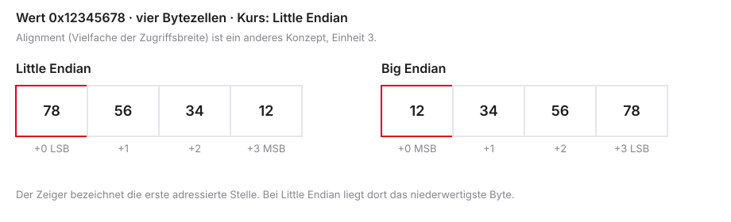
- Beispiel
0xDEADBEEFab Adresse0x00:
| Adresse | Byte |
|---|---|
0x00 |
EF (LSB) |
0x01 |
BE |
0x02 |
AD |
0x03 |
DE (MSB) |
- Ein Zeiger auf das Wort zeigt auf das LSB.
6. Kombinatorische Logik
Kombinatorische Logik — Überblick
- Kein Gedächtnis: Ausgang nur von aktuellen Eingängen
- Fundament für ALU und Routing (MUX)
%%{init: {'theme': 'base', 'themeVariables': {'background': '#FFFFFF', 'primaryColor': '#FFFFFF', 'primaryBorderColor': '#E5E5EA', 'primaryTextColor': '#1D1D1F', 'lineColor': '#86868B', 'secondaryColor': '#F5F5F7', 'tertiaryColor': '#FFFFFF', 'mainBkg': '#FFFFFF', 'nodeBorder': '#E5E5EA', 'clusterBkg': '#F5F5F7', 'clusterBorder': '#E5E5EA', 'titleColor': '#1D1D1F', 'edgeLabelBackground': '#FFFFFF'}}}%%
graph LR
A[A] --> C[Logik] --> Y[Y]
B[B] --> C
style C fill:#FFFFFF,stroke:#E2001A,stroke-width:2px !important
style A fill:#FFFFFF,stroke:#E5E5EA,stroke-width:1.5px
style B fill:#FFFFFF,stroke:#E5E5EA,stroke-width:1.5px
style Y fill:#FFFFFF,stroke:#E5E5EA,stroke-width:1.5px
Kombinatorik vs. Sequenzielle Logik
- Kombinatorisch: Ausgang nur von aktuellen Eingängen; gedächtnislos
- Beispiele: Gatter, Multiplexer, Addierer, ALU
- Sequenziell: Ausgang hängt auch vom vorherigen Zustand ab
- Taktung: Flip-Flops/Register speichern Zustände
| Eigenschaft | Kombinatorisch | Sequenziell |
|---|---|---|
| Gedächtnis | Nein | Ja |
| Takt-Abhängigkeit | Nein | Ja (meist) |
| Primärer Zweck | Rechnen / Routen | Speichern (Zustand) |
Refresher: Die grundlegenden Logikgatter
- Logikgatter = elementare Bausteine der Hardware-Abstraktion
- AND · OR · XOR · NOT — IEC-60617-Symbole
- Ab jetzt: Gatter als Black Boxes mit bekanntem Verhalten
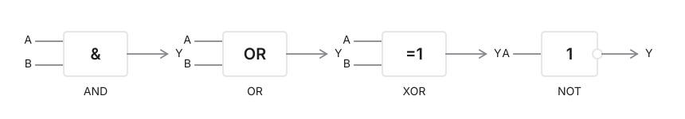
Das „Weichen“-Problem im Datenpfad
- Datenströme fließen über Busse
- Oft muss gewählt werden: z. B. Konstante oder Registerwert an die ALU?
- Gesucht: elektronisch schaltbare „Eisenbahnweiche“
- Steuerung über ein separates Steuersignal
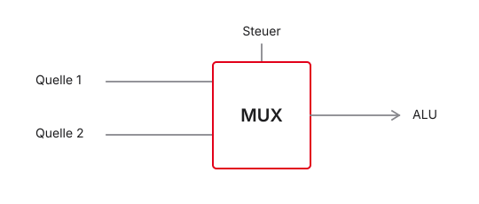
Der Multiplexer (MUX)
- Lösung für das Weichen-Problem
- Mehrere Dateneingänge (z. B. \(A\), \(B\)), ein Ausgang \(Y\)
- Select-Signal \(S\) bestimmt den durchgeschalteten Eingang
- Symbol: Rechteck (IEC 60617) mit Select-Eingang
- Häufigster Routing-Baustein in der Architektur
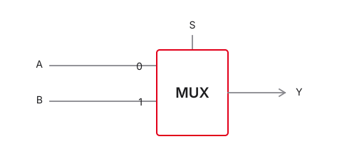
Die Logik des 2:1-Multiplexers
- Wahrheitstabelle beschreibt das Verhalten
- Boole’sche Gleichung: \(Y = (\overline{S} \land A) \lor (S \land B)\)
- \(S = 0\): Term mit \(B\) wird 0 → \(Y = A\)
- \(S = 1\): Term mit \(A\) wird 0 → \(Y = B\)
| Select (\(S\)) | Eingang \(A\) | Eingang \(B\) | Ausgang \(Y\) |
|---|---|---|---|
| 0 | 0 | X | 0 |
| 0 | 1 | X | 1 |
| 1 | X | 0 | 0 |
| 1 | X | 1 | 1 |
Der Multiplexer in reiner Hardware
- Umsetzung mit NOT, AND und OR; die stabile Auswahl folgt der Gleichung
- NOT für \(\overline{S}\)
- Zwei AND-Gatter sperren bzw. freigeben \(A\) und \(B\)
- OR führt die freigegebenen Pfade zusammen
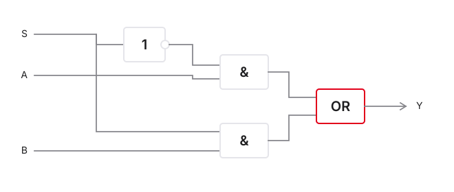
Die Brücke zur Software: MUX = IF/ELSE
Vom 1-Bit- zum 32-Bit-Bus-Multiplexer
- RISC-V: komplette 32-Bit-Wörter schalten
- 32-Bit-MUX = 32 parallele 1-Bit-MUX
- Ein gemeinsames Select-Signal \(S\) für alle Slices
- In Diagrammen: Bus mit Querstrich und Breite (
/32)
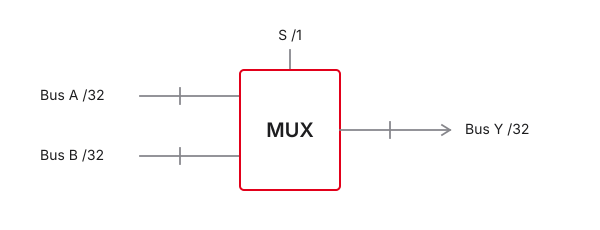
7. Addition in Hardware
Addition in Hardware — Überblick
- Vom Routing zur mathematischen Verarbeitung
- Mechanische Regeln der binären Addition
- Halbaddierer als Grundbaustein
- Kaskadierung für große Wortbreiten
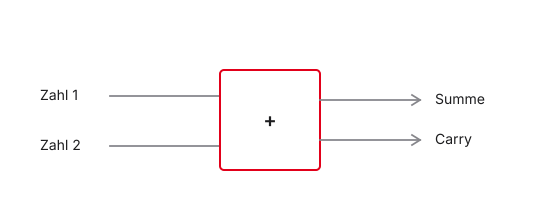
Binäre Addition (mentales Modell)
Der Halbaddierer (Half-Adder)
- Nur zwei Gatter: XOR und AND
- Eingänge: \(A\), \(B\)
- Ausgänge: Summe \(S\), Carry Out \(C_{out}\)
- \(S = A \oplus B\),\(C_{out} = A \land B\)
- Problem: kein Carry-In von einer vorherigen Stelle
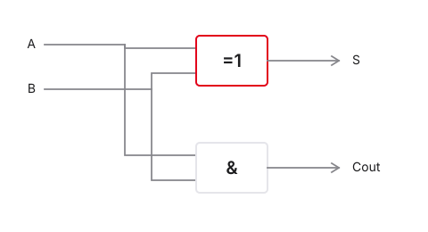
Der Volladdierer (Full-Adder)
- Drei Eingänge: \(A\), \(B\), \(C_{in}\)
- Ausgänge: Summe \(S\), \(C_{out}\)
- Intern: typisch zwei Halbaddierer + OR
- Standard-Rechenzelle in jedem Prozessor
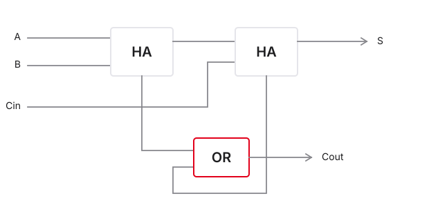
Kaskadierung: Ripple-Carry-Adder (RCA)
- 32 Volladdierer · Carry von Bit \(i\) nach \(i+1\)
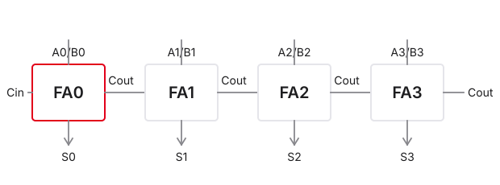
Das Problem der Laufzeit (Ripple Delay)
- Signale brauchen Gatterlaufzeiten
- FA 31 wartet auf Carry von FA 30 → … → FA 0
- Carry „plätschert“ (ripple) durch alle Stufen
- Längster kritischer Pfad begrenzt die Taktfrequenz
- Lösung in der Praxis: den Übertrag vorausberechnen
Carry-Lookahead als schnellere Addiererstruktur
- Idee: Carry nicht durchreichen, sondern vorhersagen
- Pro Bit zwei Hilfssignale (nur aus \(A_i\), \(B_i\) — ohne Warten):
- Generate: \(G_i = A_i \land B_i\) (erzeugt Carry unabhängig von \(C_i\))
- Propagate: \(P_i = A_i \oplus B_i\) (reicht \(C_i\) weiter)
- Carry-Formel: \(C_{i+1} = G_i \lor (P_i \land C_i)\)
- Alle \(G_i\), \(P_i\) parallel → Carry-Netzwerk berechnet \(C_1 \ldots C_{32}\) in wenigen Gatterstufen
- Preis: mehr Hardware; Speedup oft von \(O(n)\) auf \(O(\log n)\)
8. Die Arithmetic Logic Unit (ALU)
Die ALU — Überblick
- Mathematischer Motor jedes Prozessors
- Arithmetik: Add, Sub
- Logik: And, Or, Xor, …
- Vereint Addierer und Routing (MUX)
- Reagiert auf Control Signals aus der Instruktion
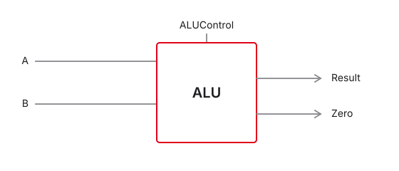
Ein Taschenrechner ohne Tasten
- Keine „Plus-Taste“ — Auswahl über Steuersignale
- Trick: intern oft alle Operationen parallel
- Ergebnis fließt durch Addierer, AND, OR, …
- MUX am Ende wählt das gewünschte Ergebnis
- Select kommt von der Control Unit
Struktur einer 1-Bit-ALU
- Parallel: AND · OR · FA → MUX → \(Y\) (ALUControl)
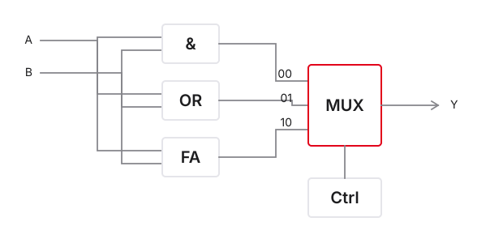
Subtraktion elegant integrieren
- \(A - B = A + \overline{B} + 1\) · MUX vor \(B\), \(C_{in}=1\)
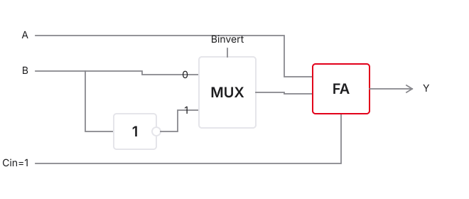
Das Zero-Signal (Null-Erkennung)
- \(Z\) ist ein kombinatorischer Ausgang unseres ALU-Lehrmodells
- \(Z = 1\), wenn alle Ergebnisbits 0 sind: NOR über diese Bits
- RV32I speichert dafür kein Condition-Code-Register
- BEQ und BNE vergleichen Register; ein Subtraktionspfad ist nur eine mögliche Umsetzung
Die 32-Bit RISC-V ALU
- 32 Slices · gemeinsame ALUControl · Carry wie RCA
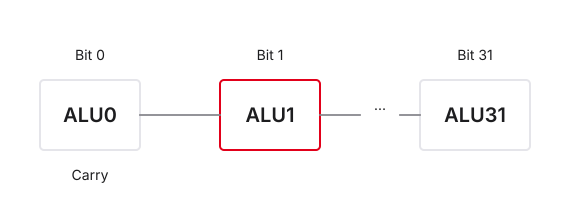
Das ALU-Schaltsymbol
- Interne Gatter final abstrahiert (Black Box)
- Klassisches Symbol: „hosenförmiges“ V / Trapez
- Oben: Operanden \(A\), \(B\) (32 Bit)
- Unten: Ergebnis (32 Bit)
- Seitlich: ALUControl und Flags (z. B. Zero)
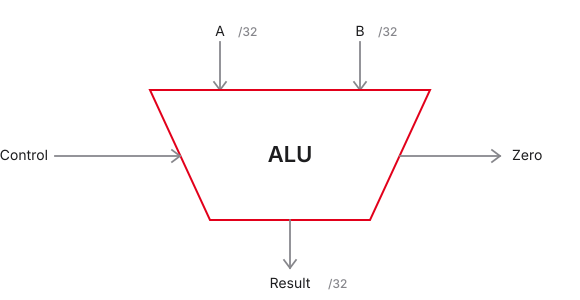
9. Die Notwendigkeit der Zeit
Die Notwendigkeit der Zeit — Überblick
- Die vierte Dimension der Computerarchitektur
- Warum kombinatorische Logik allein keinen Computer ergibt
- Zeitliche Synchronisation in Hardware
- Fließende vs. diskrete Daten
- Vorbereitung auf sequenzielle Schaltungstechnik
%%{init: {'theme': 'base', 'themeVariables': {'background': '#FFFFFF', 'primaryColor': '#FFFFFF', 'primaryBorderColor': '#E5E5EA', 'primaryTextColor': '#1D1D1F', 'lineColor': '#86868B', 'secondaryColor': '#F5F5F7', 'tertiaryColor': '#FFFFFF', 'mainBkg': '#FFFFFF', 'nodeBorder': '#E5E5EA', 'clusterBkg': '#F5F5F7', 'clusterBorder': '#E5E5EA', 'titleColor': '#1D1D1F', 'edgeLabelBackground': '#FFFFFF'}}}%%
graph LR
A[Kombinatorik] -->|nach Laufzeit| B[Ausgang folgt den Eingängen]
C[Registermodell] -->|aktive Flanke| D[Q hält bis zur nächsten Übernahme]
style C fill:#FFFFFF,stroke:#E2001A,stroke-width:2px !important
style A fill:#FFFFFF,stroke:#E5E5EA,stroke-width:1.5px
Das Problem der reinen Kombinatorik
- Der Ausgang folgt den Eingängen nach einer endlichen Laufzeit
- Es gibt keinen gespeicherten Zustand, der ein Ergebnis festhält
- Verschiedene Pfadlaufzeiten können einen Glitch erzeugen
- Für einen programmierbaren Ablauf brauchen wir gespeicherten Zustand
Die Lösung: Zustandsspeicherung
- Im Kursmodell übernimmt ein Register seinen neuen Wert an der gemeinsamen Sollflanke
- Q bleibt danach erhalten, auch wenn sich der ALU-Eingang ändert
- Reale Verzögerungen bleiben; es gibt keinen gemeinsamen Nanosekundenpunkt ohne Versatz
%%{init: {'theme': 'base', 'themeVariables': {'background': '#FFFFFF', 'primaryColor': '#FFFFFF', 'primaryBorderColor': '#E5E5EA', 'primaryTextColor': '#1D1D1F', 'lineColor': '#86868B', 'secondaryColor': '#F5F5F7', 'tertiaryColor': '#FFFFFF', 'mainBkg': '#FFFFFF', 'nodeBorder': '#E5E5EA', 'clusterBkg': '#F5F5F7', 'clusterBorder': '#E5E5EA', 'titleColor': '#1D1D1F', 'edgeLabelBackground': '#FFFFFF'}}}%%
graph LR
A[ALU-Ausgang] -->|fließendes Datum| B[Schleuse / Speicher]
B -->|gefrorener Zustand| C[Neue Berechnung]
S[Synchronisation] -.-> B
style B fill:#FFFFFF,stroke:#E2001A,stroke-width:2px !important
Das Taktsignal (Clock / CLK)
- CLK ist das Taktsignal der betrachteten Taktdomäne
- Periode \(T\), Frequenz \(f = 1/T\); \(1\,\text{ns}\) entspricht \(1\,\text{GHz}\)
- Ein Tick ist kein universeller Instruktionsschritt
- Nicht jedes Speicherelement jedes Systems hängt an diesem einen Takt
Flankensteuerung (Edge-Triggering)
- Reaktion auf den Übergang, nicht auf einen dauerhaft hohen Pegel
- Steigende Flanke: \(0 \rightarrow 1\); fallende Flanke: \(1 \rightarrow 0\)
- Unser D-FF-Lehrmodell übernimmt bei der steigenden Flanke
- Das ist keine Vorschrift der RISC-V-ISA
10. Sequenzielle Logik
Sequenzielle Logik — Überblick
- Entwurf elementarer Speicherzellen
- Rückkopplung zur Zustandserhaltung
- Physikalische Grenzen des Speicherns
- Vom Flip-Flop zum Register
- Setup-/Hold-Time als zeitliche Parameter
%%{init: {'theme': 'base', 'themeVariables': {'background': '#FFFFFF', 'primaryColor': '#FFFFFF', 'primaryBorderColor': '#E5E5EA', 'primaryTextColor': '#1D1D1F', 'lineColor': '#86868B', 'secondaryColor': '#F5F5F7', 'tertiaryColor': '#FFFFFF', 'mainBkg': '#FFFFFF', 'nodeBorder': '#E5E5EA', 'clusterBkg': '#F5F5F7', 'clusterBorder': '#E5E5EA', 'titleColor': '#1D1D1F', 'edgeLabelBackground': '#FFFFFF'}}}%%
graph LR
A[Eingang] --> B[Sequenzielle Logik]
B -->|Gedächtnis-Schleife| B
CLK[Takt] -.-> B
B --> C[Ausgang]
style B fill:#FFFFFF,stroke:#E2001A,stroke-width:2px !important
Das Rückkopplungs-Konzept
- Eine OR-Schleife kann eine Eins festhalten, sie aber nicht gezielt löschen
- Steuerbares Beispiel: zwei gekreuzte NOR-Gatter, aktives High
- \(S=1, R=0\) setzt; \(S=0, R=1\) setzt zurück; \(S=R=0\) hält
- \(S=R=1\) ist in dieser NOR-Schaltung verboten
- Ein SR-Latch ist noch kein flankengesteuertes D-Flip-Flop
| \(S\) | \(R\) | Wirkung |
|---|---|---|
| 0 | 0 | halten |
| 1 | 0 | setzen, \(Q=1\) |
| 0 | 1 | rücksetzen, \(Q=0\) |
| 1 | 1 | verboten |
Das D-Flip-Flop (D-FF)
- Wichtigster 1-Bit-Speicher der Architektur
- D (Data): neuer Wert
- Q: aktuell gespeicherter Wert
- CLK (Dreieck): flankengesteuerter Takteingang
- Ignoriert \(D\), bis die steigende Flanke an CLK eintrifft

Das Verhalten der Kamera (Metapher)
- Motiv vor der Linse = Eingang \(D\)
- Foto in der Hand = Ausgang \(Q\)
- Auslöser = Taktflanke
- Nur im Klick-Moment: \(D \rightarrow Q\)
| Zeit | \(D\) | \(Q\) | CLK | Ergebnis |
|---|---|---|---|---|
| 1 | 1 | 0 | 0 | \(Q\) bleibt 0 |
| 2 | 1 | 0 | \(\uparrow\) | \(Q\) wird 1 |
| 3 | 0 | 1 | 1 | \(Q\) bleibt 1 |
Physikalische Limits: Setup- und Hold-Time
- Setup: \(D\) stabil vor der Flanke · Hold: danach
- Verletzung → Metastabilität · ALU muss rechtzeitig fertig sein
%%{init: {'theme': 'base', 'themeVariables': {'background': '#FFFFFF', 'primaryColor': '#FFFFFF', 'primaryBorderColor': '#E5E5EA', 'primaryTextColor': '#1D1D1F', 'lineColor': '#86868B', 'secondaryColor': '#F5F5F7', 'tertiaryColor': '#FFFFFF', 'mainBkg': '#FFFFFF', 'nodeBorder': '#E5E5EA', 'clusterBkg': '#F5F5F7', 'clusterBorder': '#E5E5EA', 'titleColor': '#1D1D1F', 'edgeLabelBackground': '#FFFFFF'}}}%%
graph LR
A[ALU] --> B[Setup] --> C[Flanke] --> D[Hold]
style C fill:#FFFFFF,stroke:#E2001A,stroke-width:2px !important
style A fill:#FFFFFF,stroke:#E5E5EA,stroke-width:1.5px
style B fill:#FFFFFF,stroke:#E5E5EA,stroke-width:1.5px
style D fill:#FFFFFF,stroke:#E5E5EA,stroke-width:1.5px
Vom 1-Bit-D-FF zum 32-Bit-Register
- RV32I arbeitet mit 32-Bit-Words
- Ein D-FF speichert 1 Bit
- Lösung: 32 D-FFs parallel
- Gemeinsames CLK-Signal an alle — synchroner „Auslöser“
%%{init: {'theme': 'base', 'themeVariables': {'background': '#FFFFFF', 'primaryColor': '#FFFFFF', 'primaryBorderColor': '#E5E5EA', 'primaryTextColor': '#1D1D1F', 'lineColor': '#86868B', 'secondaryColor': '#F5F5F7', 'tertiaryColor': '#FFFFFF', 'mainBkg': '#FFFFFF', 'nodeBorder': '#E5E5EA', 'clusterBkg': '#F5F5F7', 'clusterBorder': '#E5E5EA', 'titleColor': '#1D1D1F', 'edgeLabelBackground': '#FFFFFF'}}}%%
graph TD
Bus[32-Bit Data In] -->|Bit 31| FF31[D-FF 31]
Bus -->|Bit 0| FF0[D-FF 0]
CLK[Clock] --> FF31
CLK --> FF0
style CLK fill:#FFFFFF,stroke:#E2001A,stroke-width:2px !important
Das Write-Enable-Signal (WE)
- Problem: sonst Speichern bei jedem Takt
- Oft soll ein Register unverändert bleiben
- WE / EN: Erlaubnis-Pin
- WE = 0: Flanke ignorieren; WE = 1: bei Flanke speichern
Das abstrahierte Register-Symbol
- Komplexität → Black Box „Register“
- Symbol: stehendes Rechteck
- Ports: Data In (\(D\)), Data Out (\(Q\)), CLK (Dreieck), WE
- Baustein für Registersatz und Program Counter
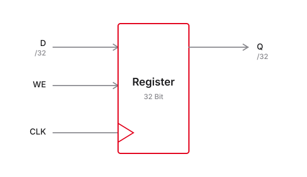
11. Das Register File (Registersatz)
Das Register File — Überblick
- Extrem schnelle „Werkbank“ der ALU
- Zusammenschluss vieler Register
- Bindeglied Software-Variablen ↔︎ Hardware
- Multi-Porting: gleichzeitig lesen und schreiben
- RISC-V-Konvention: u. a. hartverdrahtetes \(x0\)
%%{init: {'theme': 'base', 'themeVariables': {'background': '#FFFFFF', 'primaryColor': '#FFFFFF', 'primaryBorderColor': '#E5E5EA', 'primaryTextColor': '#1D1D1F', 'lineColor': '#86868B', 'secondaryColor': '#F5F5F7', 'tertiaryColor': '#FFFFFF', 'mainBkg': '#FFFFFF', 'nodeBorder': '#E5E5EA', 'clusterBkg': '#F5F5F7', 'clusterBorder': '#E5E5EA', 'titleColor': '#1D1D1F', 'edgeLabelBackground': '#FFFFFF'}}}%%
graph LR
A[Register File] -->|Operanden| B[ALU]
B -->|Ergebnis| A
style A fill:#FFFFFF,stroke:#E2001A,stroke-width:2px !important
Was ist ein Registersatz?
- RAM: groß, aber weit weg und langsam
- Der Registerinhalt folgt nach der Laufzeit des Auswahlnetzwerks
- Kombinatorisches Lesen ist die Annahme unserer Registerbank, nicht jede physische Bank
- Register File: lokales Array direkt auf dem Die
- Adressierung per Assembler (z. B.
x5) - Zwischenspeicher für intensiv genutzte Variablen
Architektur des Register Files
Lehrzustand add x7, x5, x6: \(x5=7\), \(x6=3\), Ziel \(x7\).
- Lesen: \(A1=5\), \(A2=6\) liefern \(RD1=7\), \(RD2=3\)
- Schreiben: \(A3=7\), \(WD3=10\), \(WE3=1\), Übernahme an der positiven Flanke
- Fünf Bit wählen die Nummer; 32 Bit sind die Daten
%%{init: {'theme': 'base', 'themeVariables': {'background': '#FFFFFF', 'primaryColor': '#FFFFFF', 'primaryBorderColor': '#E5E5EA', 'primaryTextColor': '#1D1D1F', 'lineColor': '#86868B', 'secondaryColor': '#F5F5F7', 'tertiaryColor': '#FFFFFF', 'mainBkg': '#FFFFFF', 'nodeBorder': '#E5E5EA', 'clusterBkg': '#F5F5F7', 'clusterBorder': '#E5E5EA', 'titleColor': '#1D1D1F', 'edgeLabelBackground': '#FFFFFF'}}}%%
graph LR
A1[A1] --> RF[Register File]
A2[A2] --> RF
RF --> RD1[RD1]
RF --> RD2[RD2]
WD3[WD3] --> RF
A3[A3] --> RF
WE3[WE3] --> RF
CLK[CLK] --> RF
style RF fill:#FFFFFF,stroke:#E2001A,stroke-width:2px !important
Interner Aufbau: Lesen (kombinatorisch)
- Intern: 32 Register (\(x0\)–\(x31\))
- Jeder Leseausgang: großer 32-zu-1-MUX
- 5-Bit-Adressen \(A1\)/\(A2\) = Select
- Der neue Wert erscheint nach der Laufzeit des Multiplexers, nicht zeitlos
%%{init: {'theme': 'base', 'themeVariables': {'background': '#FFFFFF', 'primaryColor': '#FFFFFF', 'primaryBorderColor': '#E5E5EA', 'primaryTextColor': '#1D1D1F', 'lineColor': '#86868B', 'secondaryColor': '#F5F5F7', 'tertiaryColor': '#FFFFFF', 'mainBkg': '#FFFFFF', 'nodeBorder': '#E5E5EA', 'clusterBkg': '#F5F5F7', 'clusterBorder': '#E5E5EA', 'titleColor': '#1D1D1F', 'edgeLabelBackground': '#FFFFFF'}}}%%
graph LR
R1[Reg x1] --> MUX["32:1 MUX"]
R2[Reg x2] --> MUX
R31[Reg x31] --> MUX
A1[Adresse A1] -.->|Select| MUX
MUX --> RD1[RD1]
style MUX fill:#FFFFFF,stroke:#E2001A,stroke-width:2px !important
Interner Aufbau: Schreiben (sequenziell)
- \(WD3\) liegt parallel an allen 32 Registern
- Decoder: 5-Bit-\(A3\) → genau ein WE-Pin aktiv
- Schreiben erst bei steigender Flanke
Die RISC-V-Register (\(x0\)–\(x31\))
- RV32I: exakt 32 Architekturregister à 32 Bit
- Assembler:
x0…x31(plus ABI-Aliase:sp,ra, …) - 5 Bit Adresse reichen: \(2^5 = 32\)
| Register | Alias | Zweck |
|---|---|---|
| \(x0\) | zero |
hartverdrahtete 0 |
| \(x1\) | ra |
Return Address |
| \(x2\) | sp |
Stack Pointer |
| \(x10\)–\(x17\) | a0–a7 |
Argumente; einfaches Integerergebnis in a0 |
Das Hardwired-Zero-Register (\(x0\))
- Fest auf logisch 0 verdrahtet
- Schreiben wird ignoriert — Wert bleibt 0
- Spart Spezialbefehle (RISC-Philosophie)
- Beispiel:
add x6, x5, x0kopiert \(x5\) nach \(x6\) mvist eine Pseudoinstruktion, oft alsaddimit Immediate 0
12. Speicherarchitektur
Speicherarchitektur — Überblick
- Big Picture: CPU und Außenwelt (RAM)
- Flaschenhals des gemeinsamen Busses
- Zwei Denkschulen: Von Neumann vs. Harvard
- Vorbereitung auf den Single-Cycle-Datenpfad in Ripes
%%{init: {'theme': 'base', 'themeVariables': {'background': '#FFFFFF', 'primaryColor': '#FFFFFF', 'primaryBorderColor': '#E5E5EA', 'primaryTextColor': '#1D1D1F', 'lineColor': '#86868B', 'secondaryColor': '#F5F5F7', 'tertiaryColor': '#FFFFFF', 'mainBkg': '#FFFFFF', 'nodeBorder': '#E5E5EA', 'clusterBkg': '#F5F5F7', 'clusterBorder': '#E5E5EA', 'titleColor': '#1D1D1F', 'edgeLabelBackground': '#FFFFFF'}}}%%
graph LR
A[CPU] <-->|Befehle & Daten| B[(Arbeitsspeicher)]
style B fill:#FFFFFF,stroke:#E2001A,stroke-width:2px !important
Wo liegen die Programme?
- Der Registersatz hält Operanden, nicht das Programm
- Instruktionen kommen aus einem adressierbaren Instruktionsspeicher
- RAM, Flash oder ein Cache sind mögliche Umsetzungen
- Eine Instruktionsadresse ist keine Registernummer
Die Von-Neumann-Architektur
- 1940er (John von Neumann)
- Gemeinsamer Adressraum für Code und Daten
- Ein gemeinsamer Bus ist ein zusätzliches Ressourcenmodell
- Der Buskonflikt entsteht erst, wenn Fetch und Datenzugriff denselben Port brauchen
- Ein gemeinsamer Adressraum allein erzwingt diesen Konflikt nicht
%%{init: {'theme': 'base', 'themeVariables': {'background': '#FFFFFF', 'primaryColor': '#FFFFFF', 'primaryBorderColor': '#E5E5EA', 'primaryTextColor': '#1D1D1F', 'lineColor': '#86868B', 'secondaryColor': '#F5F5F7', 'tertiaryColor': '#FFFFFF', 'mainBkg': '#FFFFFF', 'nodeBorder': '#E5E5EA', 'clusterBkg': '#F5F5F7', 'clusterBorder': '#E5E5EA', 'titleColor': '#1D1D1F', 'edgeLabelBackground': '#FFFFFF'}}}%%
graph LR
CPU[CPU] <-->|Bus Flaschenhals| RAM[Gemeinsamer Speicher]
RAM --- C[Code]
RAM --- D[Daten]
style RAM fill:#FFFFFF,stroke:#E2001A,stroke-width:2px !important
Die Harvard-Architektur
- Getrennte Speicher für Instruktionen und Daten
- Zwei physische Busse zur CPU
- Vorteil: Fetch und Datenzugriff parallel möglich
- Nachteil: starre Grenzen zwischen den Speichern
%%{init: {'theme': 'base', 'themeVariables': {'background': '#FFFFFF', 'primaryColor': '#FFFFFF', 'primaryBorderColor': '#E5E5EA', 'primaryTextColor': '#1D1D1F', 'lineColor': '#86868B', 'secondaryColor': '#F5F5F7', 'tertiaryColor': '#FFFFFF', 'mainBkg': '#FFFFFF', 'nodeBorder': '#E5E5EA', 'clusterBkg': '#F5F5F7', 'clusterBorder': '#E5E5EA', 'titleColor': '#1D1D1F', 'edgeLabelBackground': '#FFFFFF'}}}%%
graph LR
IM[(Instruction Memory)] -->|Befehls-Bus| CPU[CPU]
CPU <-->|Daten-Bus| DM[(Data Memory)]
style CPU fill:#FFFFFF,stroke:#E2001A,stroke-width:2px !important
Der RISC-V-Kompromiss im Labor
- Gewähltes Ripes-Lehrbild: getrennte Instruktions- und Datenpfade
- Single-Cycle bedeutet hier eine native Instruktion pro Modelltakt
add: Fetch, Register lesen, ALU, Registerwriteback; Datenmemory unbenutzt- Load liest Datenmemory; Store schreibt Datenmemory und kein Ergebnisregister
Abschlussblatt
- Begriffe: Zweierkomplement, Byte-Reihenfolge, Alignment, kombinatorisch, sequenziell.
- Modellannahme: positive Flanke und Little Endian der Kursumgebung.
- Typischer Fehler: C-Vergleich mit einem Bitmustervergleich von Sign-Magnitude gleichsetzen.
- Übung: acht Hexziffern eines 32-Bit-Werts; Little-Endian-Byte von
0x12345678; Volladdierer bei \(A=B=C_{in}=1\).